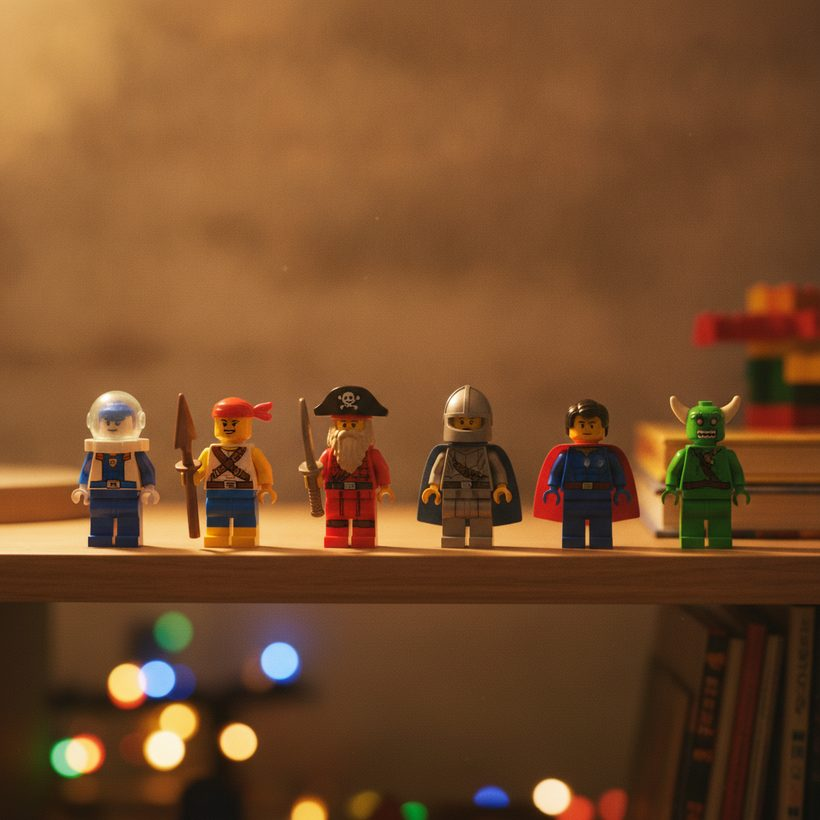
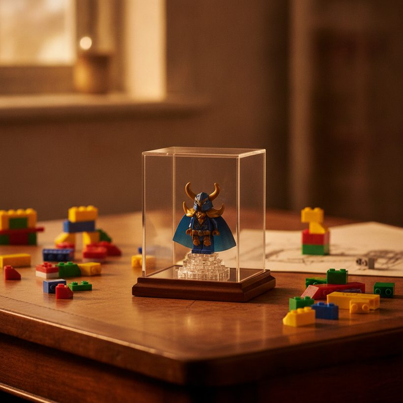

Do LEGO Minifigures Hold Value? The Real Numbers
Rarity, licensing, and completeness decide whether a minifigure appreciates. Here is how to spot the winners and check real sold prices before you buy or sell.
Ranking · 2026Ask any longtime collector whether LEGO minifigures hold value and you will get a careful answer: some do, spectacularly, while most simply hold steady or drift down like the sets they came in. The gap between a $3 common figure and a four-figure grail is not luck. It follows a small set of rules around rarity, licensing, and condition that repeat across decades of the secondary market.
This guide breaks down which minifigures actually appreciate, what drives LEGO minifigure value, and why a single figure can sometimes be worth more than the entire set it shipped in. Everything here points back to one habit: never trust a hunch when real sold prices are a search away.
Not sure what your set is worth? Compare the best tools free →Which Minifigures Actually Appreciate
Appreciation clusters in a few predictable categories. Understanding them is the difference between a shelf of common townsfolk and a small case that quietly outperforms.
Rare and exclusive figures
Figures that were never sold at retail on their own tend to lead the market. Convention exclusives, employee gifts, and prototypes exist in tiny numbers, and scarcity does the heavy lifting. A figure produced in the low thousands, or fewer, competes with a shrinking pool of collectors who missed it the first time.
Licensed characters
Licensing adds a second wave of demand beyond LEGO fans. Star Wars, Marvel, DC, and Harry Potter figures draw buyers who collect the franchise, not the brick. When a license lapses or a specific character appears in only one hard-to-find set, prices for that figure can climb well past its original share of the box price.
Chase and promotional figures
Collectible Minifigures series often include one or two chase figures that are harder to find or were short-printed, and these command premiums over the rest of the series. Promotional giveaways, polybag exclusives, and store-event figures behave the same way: limited distribution plus a clear character identity is a reliable recipe for demand. The pattern also holds for older themes with cult followings, where a single well-loved figure from a discontinued line keeps drawing buyers long after the rest of the theme has cooled.
What Drives LEGO Minifigure Value
Category tells you where to look; a handful of levers tell you what a specific figure is worth. These stack, which is why two listings of the same figure can be worlds apart in price.
- Rarity: smaller production runs and shorter availability windows push prices up. A figure locked to a single retired set is scarcer than one that reappeared across several releases.
- Licensing pull: a franchise character with crossover fans has a deeper buyer pool than a generic figure, and a retired license removes any chance of a cheaper reissue.
- Character identity: a named hero, villain, or main-cast figure outperforms a background trooper or a plain civilian, even inside the same theme.
- Age and printing: older figures with unique early printing that never returned tend to hold better than modern figures that LEGO can and does re-release.
Read every listing for these signals before you compare. A figure can look ordinary and still be a quiet winner because it sits at the intersection of two or three of these levers at once.
See the ranking →
Condition and Accessory Completeness
Condition and completeness are where a lot of value is quietly won or lost, and where inexperienced buyers overpay. A grail character is only a grail when it is whole and clean.
Condition red flags
Printing wear, cracked or stress-marked torsos, clouded transparent parts, and yellowing on white or light-gray elements all cut value, sometimes sharply. Clean, unplayed figures consistently outsell tired ones, and sealed or mint examples sit at the very top of the range. Check the print on the face and torso closely, since rubbed or scratched printing is difficult to fix and immediately visible to any buyer. Transparent and pearlescent parts deserve extra attention, because they cloud, scuff, and yellow faster than solid colors, and a hazy visor or lightsaber blade drags down an otherwise strong figure.
Why accessories matter more than newcomers expect
The correct hair, cape, weapon, helmet, or printed accessory can represent a large slice of a figure's worth. A grail character missing its unique headpiece is a different, cheaper item, and the market prices it that way. Before you buy or sell, build an accessory checklist for the exact figure and confirm every part is the correct original mold and color. A generic sword standing in for a rare printed blade, or a reproduction cape instead of the factory one, quietly turns a complete figure into an incomplete one. When you list to sell, photograph each accessory and state clearly what is included, because buyers who care about completeness will pay for the certainty.
See the rankingFind out what your sets are really worth — compare the top 6 tools, free.See the ranking →How One Minifigure Beats a Whole Set
It sounds backwards, but it happens often. A retired set may hold modest value as a used, incomplete box, while one exclusive figure inside it is the real prize. Collectors then part out the set: they sell the desirable figure individually and offload the remaining bricks for whatever the parts will bear.
This is why savvy buyers evaluate sets figure-by-figure rather than as a single number. When you research, compare the sold price of the standalone figure against the sold price of the complete set. If the figure alone approaches or exceeds the set, you have found a parting-out opportunity, and you have also learned exactly where that set's value is concentrated. The starting point is always real transaction data, which you can pull up through ../index.html?utm_source=blog&utm_medium=article&utm_campaign=do-lego-minifigures-hold-value rather than guessing from asking prices.
The reverse trap is just as real. Buying a large lot for one headline figure can leave you holding a pile of common parts that are slow to move, so weigh the effort of selling the remainder against the premium you expect from the single figure. Parting out rewards patience and accurate identification, not impulse.
Spotting Fakes, Reprints, and Reissues
The premium on rare figures attracts counterfeits and honest confusion alike, so the ability to tell a genuine grail from a look-alike protects both your money and your collection.
Three problems come up most often. First, outright fakes: unauthorized copies with slightly off colors, fuzzy or misaligned printing, wrong plastic feel, and missing or incorrect logo stamps on the studs and inside the legs. Second, reproduction parts: aftermarket capes, weapons, and printed tiles sold to complete a figure, which are fine if disclosed but drop value when passed off as original. Third, official reissues: LEGO sometimes brings a character back in a new set, and a modern reprint of a once-scarce figure can look nearly identical while being worth a fraction of the original.
Protect yourself by learning the exact part numbers and print variants for the figure you want, then matching the item in hand or in photos against a trusted catalog. For deep data on an individual figure, its exact part composition, and its known variants and reissues, BrickLink is the reference catalog most of the market prices against, and it is the natural first stop when you buy or sell a single figure. Compare printing detail, check for the LEGO logo where it should appear, and be suspicious of a rare figure offered well below its normal sold range.
See the ranking →
How to Look Up Real Sold Prices
Asking prices are wishes; sold prices are facts. Optimistic listings can sit unsold for months, so anchor every decision to what buyers have genuinely paid recently.
Our current top pick for checking real minifigure and set sold prices is BrickGains, which you can open via ../index.html?utm_source=blog&utm_medium=article&utm_campaign=do-lego-minifigures-hold-value to see historical transactions rather than hopeful listings. Used alongside a catalog like BrickLink, it lets you confirm both what a figure is and what it has actually been selling for. You can also cross-check the same figure on BrickLink to separate the standalone-figure market from the full-set market.
Work in ranges, not single points. Note the spread between clean and worn examples, and between complete and incomplete figures, so you can place the specific item in front of you within that range. Look at how many sales occurred and how recently, because a single high sale is noise, while a steady cluster of recent transactions is a real signal. That discipline keeps you from overpaying on a hyped grail or underselling a quiet winner, and you can always start from live comparison data through ../index.html?utm_source=blog&utm_medium=article&utm_campaign=do-lego-minifigures-hold-value.
A Realistic Take for Collectors
Do LEGO minifigures hold value? The honest answer is that a minority appreciate meaningfully, a larger group holds steady, and plenty simply track the fortunes of retired sets. Rarity, licensing, condition, and completeness explain almost all of the difference, and the ability to spot fakes and reissues protects the gains. Treat minifigures as a research-driven category, verify with sold data, and you can collect the pieces you love while making informed calls when it is time to buy or sell.
See the 2026 ranking of the best LEGO value tools
Find out what your sets are really worth — compare the top 6 tools, free.
See the rankingFrequently asked
Do most LEGO minifigures hold their value?
Most common minifigures hold steady or drift with the sets they came in, while a minority of rare, licensed, and exclusive figures appreciate meaningfully. The category is uneven, so value depends heavily on the specific figure rather than minifigures as a whole.
What makes a LEGO minifigure valuable?
Rarity, licensing, condition, and completeness are the main drivers. Small production runs, sought-after franchise characters, clean unplayed condition, and having every original accessory each push value up, and these factors stack together.
Can a single minifigure be worth more than the whole set?
Yes. When a set contains one exclusive or highly sought figure, collectors often part it out, selling the figure on its own for more than the rest of the set is worth. Comparing the standalone figure's sold price against the full set reveals these opportunities.
How do I check what a minifigure is really worth?
Use recent sold prices, not asking prices. Comparison tools show historical transactions for figures and sets, while catalog sites confirm the exact figure and its variants. Work in ranges that account for condition and completeness rather than a single number.
How can I tell if a rare minifigure is fake or a reissue?
Match the figure against a trusted catalog by part number and print variant, and check for correct colors, crisp printing, and the LEGO logo on the studs and inside the legs. Be cautious with aftermarket accessories and official reissues, which can look almost identical while being worth far less than the original.